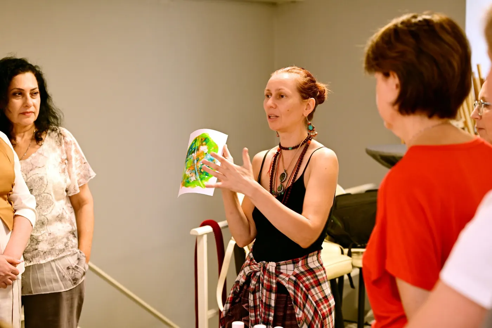

נוירוגרפיקה עם סנדרה לייפר: מדריך אונליין, לימוד ומפגשים בישראל
נוירוגרפיקה היא שיטת ציור שפיתח הפסיכולוג פאבל פיסקרב בשנת 2014. הציור נבנה מ״קווים נוירוגרפיים״ חופשיים, את הפינות החדות בחיתוכים מעגלים, מחברים את הדף לקומפוזיציה אחת וצובעים. לא צריך לדעת לצייר: מה שחשוב הוא תשומת הלב לקו, לגוף ולרגשות.
לתאם מפגש בוואטסאפלנסות אונליין בחינם
סנדרה לייפר היא אמנית ומורה לאמנות חזותית עם יותר מעשרים שנות ניסיון, מדריכה וסופרוויזרית בנוירוגרפיקה. חיה ועובדת בישראל.

מה זה נוירוגרפיקה
בנוירוגרפיקה לא מציירים ״תמונה יפה״ אלא את הנושא או הבקשה שלכם: משימה שרוצים לפתור, משהו שרוצים לשנות, או מצב שרוצים להתמודד איתו.
הבסיס של השיטה הוא הקו הנוירוגרפי: קו חופשי שמופיע במקום שלא ציפינו לו ואף פעם לא חוזר על עצמו. הקווים נחתכים, את הפינות החדות בחיתוכים מעגלים, אף אלמנט לא נשאר מבודד, ובסוף צובעים את הדף בצבעים שמרגישים נכונים.
משתמשים בנוירוגרפיקה כתרגול יצירתי להיכרות עצמית, לעבודה עם בקשה ולריכוז רגוע. זה לא טיפול רפואי ולא תחליף לפסיכותרפיה.
נוירוגרפיקה אונליין: לנסות בחינם
המדריך האינטראקטיבי באתר של סנדרה מוביל דרך כל השלבים ישירות בדפדפן: אפשר לצייר באצבע או בעכבר, ואפשר לקחת דף וטושים ולעקוב אחרי ההוראות.
המדריך זמין בעברית, ברוסית ובאנגלית. כל מה שמציירים וכותבים נשאר במכשיר שלכם.
האלגוריתם להסרת מגבלות
האלגוריתם להסרת מגבלות הוא האלגוריתם הבסיסי של הנוירוגרפיקה, ובדרך כלל מתחילים ממנו את הלימוד. העיקרון: לצייר באופן ספונטני את המתח סביב הנושא, לעגל את כל הפינות החדות, לחבר את האלמנטים לקומפוזיציה אחת ולצבוע את הדף, תוך השוואה בין התחושות לפני ואחרי. המדריך האונליין של סנדרה עובר את הדרך הזו צעד אחר צעד.
איך מציירים נוירוגרפיקה: השלבים
כך בנוי המדריך של סנדרה. אפשר לעבור אותו על דף נייר עם טושים או ישירות בטלפון.
חומרים
דף לבן, טוש שחור לקווים, עט ג׳ל דק לעיגול פינות, טוש עבה אחד וכמה טושים צבעוניים. לא משתמשים בטושים מתכתיים.
הבקשה
נסחו נושא: משימה או מצב שרוצים לעבוד איתו, ותנו לו שם קצר.
20 מילים ב־2 דקות
כתבו על הנושא באופן ספונטני, בזרימה, בלי לחשוב על כל מילה.
בדיקה
הקשיבו לעצמכם: גוף, רגשות, דימוי, מחשבות. חוזרים לבדיקה הזו אחרי כל שלב.
קווים נוירוגרפיים
ציירו קווים על כל הדף, לכיוון שהיד לא הייתה הולכת אליו מתוך הרגל. קו אחרי קו, עד שהדף מתמלא.
עיגול פינות
מלאו כל פינה חדה בחיתוך בקשת קטנה, כך שהקווים זורמים זה לתוך זה.
כללי ההרמוניה
כל הפינות מעוגלות, אין אלמנטים מבודדים, הכול מחובר לקומפוזיציה אחת.
צורה לבחירתכם
עם טוש עבה ציירו ביד צורה משלכם, ״אי״, העבירו דרכה קווים נוירוגרפיים וחברו אותה לקומפוזיציה.
שוב פינות
עגלו את כל הפינות החדשות שנוצרו סביב הצורה.
צבע
צבעו את המרחבים בצבעים לפי התחושה, ובדקו מה השתנה בגוף, ברגשות ובמחשבות.
עבודות נוירוגרפיקה של סנדרה
לחצו על עבודה כדי לפתוח את העמוד שלה.


מי מנחה: סנדרה לייפר
- מדריכה וסופרוויזרית בנוירוגרפיקה.
- אמנית מקצועית בעלת הכשרה אקדמית באמנות: בית הספר לאמנות מספר 1 והמכללה לאמנות בירוסלבל.
- יותר מעשרים שנה מלמדת אמנות חזותית: שיעורים פרטניים, סדנאות קבוצתיות ומעבדות יצירה.
- אשת אמנות בישראל, חברה באיגוד האמנים המקצועיים בישראל ובאיגוד אמני אונסק״ו.
- תערוכת יחיד ״אגדה הנולדת מתוך כתם״, תל אביב, ספטמבר 2026.
- מפתחת שיטה משלה לחקירה עצמית יצירתית בקבוצה, המשלבת תנועת גוף, נשימה, מחווה, אלתור אמנותי, נוירוגרפיקה והתבוננות פילוסופית.
מפגשי נוירוגרפיקה עם סנדרה
סנדרה מנחה שיעורים פרטניים, סדנאות קבוצתיות ומעבדות יצירה לילדים ולמבוגרים. את הפורמט, המקום, השפה והזמן מתאמים אישית: כתבו לסנדרה בוואטסאפ.


טלפון ווואטסאפ: +972 53-538-0014
שאלות נפוצות על נוירוגרפיקה
מה זה נוירוגרפיקה?
נוירוגרפיקה היא שיטת ציור שבה מקווים נוירוגרפיים חופשיים, עיגול פינות וצבע נבנה ציור סביב בקשה אישית. את השיטה פיתח הפסיכולוג פאבל פיסקרב בשנת 2014.
צריך לדעת לצייר?
לא. בנוירוגרפיקה לא צריך טכניקה אמנותית: מציירים קווים וצורות פשוטים, והעיקר הוא לשים לב לתחושות בזמן העבודה.
מה צריך למפגש נוירוגרפיקה?
דף נייר לבן, טוש שחור, עט ג׳ל דק, טוש עבה אחד וכמה טושים צבעוניים בלי ברק מתכתי.
מה זה האלגוריתם להסרת מגבלות?
זה האלגוריתם הבסיסי של הנוירוגרפיקה: ציור ספונטני סביב הנושא, עיגול כל הפינות החדות, חיבור האלמנטים לקומפוזיציה וצביעה.
אפשר לתרגל נוירוגרפיקה אונליין?
כן. באתר של סנדרה לייפר יש מדריך אונליין אינטראקטיבי וחינמי, צעד אחר צעד, בעברית, ברוסית ובאנגלית. על הפורמט של מפגש עם סנדרה מתאמים בוואטסאפ.
איפה לומדים נוירוגרפיקה בישראל?
אצל סנדרה לייפר, מדריכה וסופרוויזרית בנוירוגרפיקה שחיה ועובדת בישראל. היא מנחה שיעורים פרטניים וסדנאות קבוצתיות. לתיאום בוואטסאפ: 053-538-0014.
במה נוירוגרפיקה שונה מציור רגיל?
המטרה היא לא תמונה יפה אלא התהליך: קו חופשי במקום קו של הרגל, עיגול פינות חדות ובדיקה של הגוף, הרגשות והמחשבות אחרי כל שלב.
נוירוגרפיקה היא טיפול?
לא. זה תרגול יצירתי להיכרות עצמית ולעבודה עם בקשה. הוא לא מחליף עזרה רפואית או פסיכולוגית.
רוצים לעשות את זה יחד עם סנדרה?
כתבו לסנדרה בוואטסאפ ותתאמו מפגש נוירוגרפיקה.